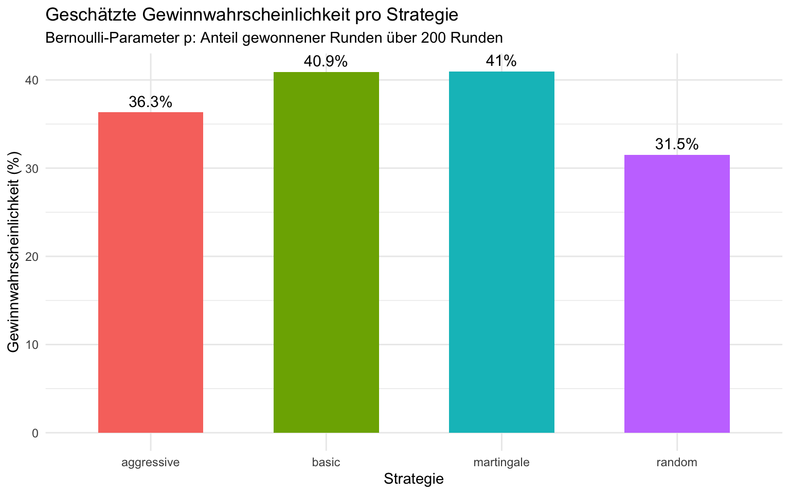
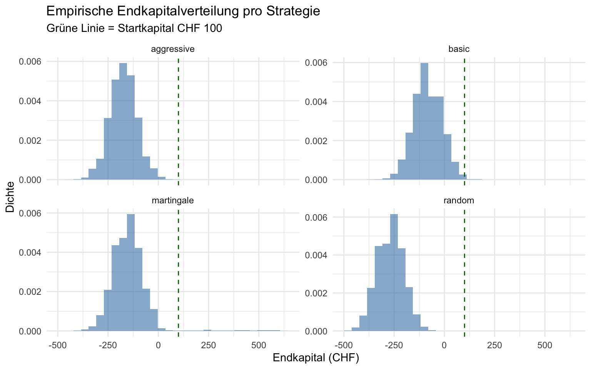
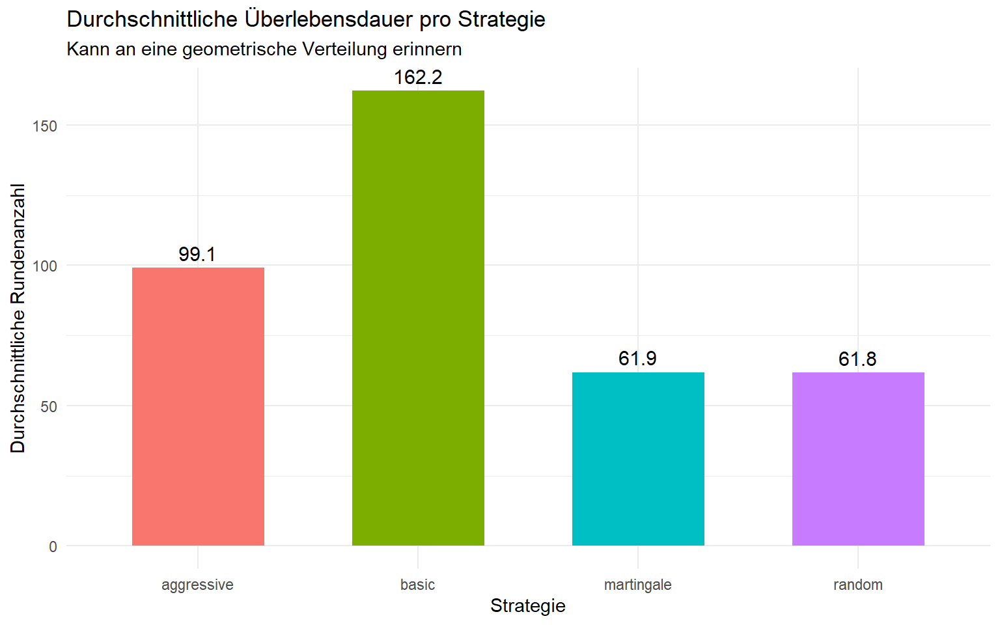

Code anzeigen
library(ggplot2)
# Deck aufbauen: 13 Werte × 4 Farben = 52 Karten
one_suit <- c(2, 3, 4, 5, 6, 7, 8, 9, 10, 10, 10, 10, 11)
deck <- rep(one_suit, times = 4)Semesterarbeit Wahrscheinlichkeitsrechnung FS26
Blackjack ist eines der beliebtesten Casinospiele der Welt. Im Gegensatz zu vielen anderen Glücksspielen hängt das Ergebnis nicht nur vom Zufall ab, sondern auch von den Entscheidungen des Spielers. Das wirft eine interessante Frage auf: Macht die gewählte Strategie langfristig wirklich einen Unterschied?
Fragestellung: Welche vereinfachte Blackjack-Strategie erzielt über 200 Runden die höchste Gewinnwahrscheinlichkeit?
Wir haben dieses Thema gewählt, weil es einen klar modellierbaren stochastischen Prozess darstellt. In unserem vereinfachten Modell wird jede Runde als binäres Zufallsexperiment behandelt, Gewinn oder Nicht-Gewinn und die Strategien werden anhand der geschätzten Gewinnwahrscheinlichkeit verglichen.
Wir simulieren eine vereinfachte Version von Blackjack mit folgenden Regeln:
Zur Vereinfachung der Simulation haben wir folgende Annahmen getroffen:
Wir vergleichen vier Strategien:
| Strategie | Beschreibung |
|---|---|
| Basic | Hit wenn Summe < 17, Stand ab 17 |
| Aggressive | Hit wenn Summe < 19, Stand ab 19 |
| Random | Hit oder Stand zufällig (50/50) — Vergleichsstrategie |
| Martingale | Basic Hit/Stand; Einsatz nach Verlust verdoppeln, nach Gewinn zurücksetzen |
Martingale ist keine Spielstrategie im engeren Sinn, sondern eine Einsatzstrategie. Die Hit/Stand-Entscheidungen entsprechen Basic; nur die Einsatzhöhe ändert sich.
Unser vereinfachtes Modell basiert hauptsächlich auf Bernoulli-Versuchen.
Bernoulli-Verteilung Jede Runde wird als Zufallsexperiment mit zwei möglichen Ausgängen modelliert: Gewinn (1) oder Nicht-Gewinn (0). Für jede Strategie schätzen wir die Erfolgswahrscheinlichkeit \(p\) empirisch aus den simulierten Runden. Die Anzahl Gewinne in 200 Runden lässt sich damit als Summe vieler Bernoulli-Versuche interpretieren.
Empirische Endkapitalverteilung Das Endkapital nach 200 Runden wird als empirische Verteilung aus der Simulation ausgewertet. Für Strategien mit fixem Einsatz kann diese Verteilung annähernd glockenförmig wirken — wir behandeln sie jedoch bewusst als empirische Verteilung und nicht als exakt normalverteilt.
library(ggplot2)
# Deck aufbauen: 13 Werte × 4 Farben = 52 Karten
one_suit <- c(2, 3, 4, 5, 6, 7, 8, 9, 10, 10, 10, 10, 11)
deck <- rep(one_suit, times = 4)# Ass als 1 zählen wenn die Summe über 21 liegt
calculate_sum <- function(hand) {
total <- sum(hand)
aces <- sum(hand == 11)
while (total > 21 && aces > 0) {
total <- total - 10
aces <- aces - 1
}
total
}# Gibt 1 (Gewinn) oder 0 (Nicht-Gewinn) zurück
# Unentschieden zählt als 0
play_round <- function(strategy = "basic") {
shuffled <- sample(deck)
player_hand <- shuffled[1:2]
dealer_hand <- shuffled[3:4]
player_sum <- calculate_sum(player_hand)
dealer_sum <- calculate_sum(dealer_hand)
if (strategy == "basic") {
while (player_sum < 17) {
player_hand <- c(player_hand, sample(deck, 1))
player_sum <- calculate_sum(player_hand)
}
} else if (strategy == "martingale") {
# gleiche Hit/Stand-Logik wie basic, Einsatz kommt in simulate_player()
while (player_sum < 17) {
player_hand <- c(player_hand, sample(deck, 1))
player_sum <- calculate_sum(player_hand)
}
} else if (strategy == "aggressive") {
while (player_sum < 19) {
player_hand <- c(player_hand, sample(deck, 1))
player_sum <- calculate_sum(player_hand)
}
} else if (strategy == "random") {
while (player_sum < 21) {
if (sample(c(TRUE, FALSE), 1)) {
player_hand <- c(player_hand, sample(deck, 1))
player_sum <- calculate_sum(player_hand)
} else break
}
}
# Dealer zieht bis 17
while (dealer_sum < 17) {
dealer_hand <- c(dealer_hand, sample(deck, 1))
dealer_sum <- calculate_sum(dealer_hand)
}
if (player_sum > 21) return(0) # Spieler bust
if (dealer_sum > 21) return(1) # Dealer bust
if (player_sum > dealer_sum) return(1)
return(0)
}# 200 Runden pro Spieler, Kapitalverlauf wird mitgespeichert
# Martingale: Einsatz verdoppeln nach Verlust, zurücksetzen nach Gewinn
simulate_player <- function(strategy = "basic",
start_capital = 100,
bet = 5,
n_rounds = 200) {
capital <- start_capital
current_bet <- bet
capital_history <- c(start_capital)
wins <- 0
for (r in 1:n_rounds) {
result <- play_round(strategy)
if (strategy == "martingale") {
if (result == 1) {
capital <- capital + current_bet
current_bet <- bet # zurücksetzen
wins <- wins + 1
} else {
capital <- capital - current_bet
current_bet <- current_bet * 2
if (current_bet > capital) current_bet <- max(capital, bet) # nicht ins Minus
}
} else {
if (result == 1) {
capital <- capital + bet
wins <- wins + 1
} else {
capital <- capital - bet
}
}
capital_history <- c(capital_history, capital)
}
list(
final_capital = capital,
wins = wins,
win_rate = wins / n_rounds,
capital_history = capital_history
)
}Wir simulieren 10’000 Spieler pro Strategie — insgesamt 40’000 simulierte Spieler. Jeder spielt genau 200 Runden.
set.seed(42)
n <- 10000
n_rounds <- 200
strategies <- c("basic", "aggressive", "random", "martingale")
results <- data.frame()
avg_paths <- list()
for (strat in strategies) {
final_capitals <- numeric(n)
win_rates <- numeric(n)
all_paths <- matrix(0, nrow = n, ncol = n_rounds + 1)
for (i in 1:n) {
sim <- simulate_player(strat, n_rounds = n_rounds)
final_capitals[i] <- sim$final_capital
win_rates[i] <- sim$win_rate
all_paths[i, ] <- sim$capital_history
}
# Durchschnittspfad über alle 10'000 Spieler
avg_paths[[strat]] <- colMeans(all_paths)
results <- rbind(results, data.frame(
strategy = strat,
capital = final_capitals,
win_rate = win_rates
))
}Die Resultate zeigen deutliche Unterschiede zwischen den Strategien. In unserer Simulation schneidet die Basic-Strategie insgesamt am besten ab: Sie erzielt die höchste Gewinnwahrscheinlichkeit und das höchste durchschnittliche Endkapital. Die Aggressive-Strategie bringt keinen klaren Vorteil gegenüber Basic. Die Random-Strategie zeigt erwartungsgemäss das schlechteste Ergebnis.
Die Martingale-Strategie zeigt ein typisches Muster von kurzen Gewinnphasen und seltenen, aber starken Verlusten. Dadurch wirkt sie kurzfristig günstig, führt aber durch die Einsatzverdopplung oft zu hohen Verlusten.
summary_stats <- data.frame(
Strategie = tapply(results$win_rate, results$strategy, mean) |> names(),
"Ø Gewinnwahrsch. (%)" = round(tapply(results$win_rate, results$strategy, mean) * 100, 1),
"Ø Endkapital (CHF)" = round(tapply(results$capital, results$strategy, mean), 1),
"Anteil > 100 CHF (%)" = round(tapply(results$capital > 100, results$strategy, mean) * 100, 1),
check.names = FALSE,
row.names = NULL
)
knitr::kable(summary_stats, align = "lcccc")| Strategie | Ø Gewinnwahrsch. (%) | Ø Endkapital (CHF) | Anteil > 100 CHF (%) |
|---|---|---|---|
| aggressive | 36.3 | -173.4 | 0.0 |
| basic | 40.9 | -81.8 | 0.3 |
| martingale | 41.0 | -146.7 | 1.4 |
| random | 31.5 | -269.5 | 0.0 |
Das Balkendiagramm zeigt den geschätzten Bernoulli-Parameter \(p\) pro Strategie — also den Anteil gewonnener Runden über 200 Runden.
win_prob <- aggregate(win_rate ~ strategy, data = results, FUN = mean)
ggplot(win_prob, aes(x = strategy, y = win_rate * 100, fill = strategy)) +
geom_col(width = 0.6) +
geom_text(aes(label = paste0(round(win_rate * 100, 1), "%")),
vjust = -0.5, size = 4) +
labs(title = "Geschätzte Gewinnwahrscheinlichkeit pro Strategie",
subtitle = "Bernoulli-Parameter p: Anteil gewonnener Runden über 200 Runden",
x = "Strategie", y = "Gewinnwahrscheinlichkeit (%)") +
theme_minimal() +
theme(legend.position = "none")
Das Histogramm zeigt die Verteilung des Endkapitals nach 200 Runden pro Strategie. Die grüne gestrichelte Linie markiert das Startkapital von CHF 100.
ggplot(results, aes(x = capital)) +
geom_histogram(aes(y = after_stat(density)),
bins = 30, fill = "steelblue", alpha = 0.6) +
geom_vline(xintercept = 100, linetype = "dashed", color = "darkgreen") +
facet_wrap(~strategy, scales = "free_y") +
labs(title = "Empirische Endkapitalverteilung pro Strategie",
subtitle = "Grüne Linie = Startkapital CHF 100",
x = "Endkapital (CHF)", y = "Dichte") +
theme_minimal()
Der Plot zeigt den durchschnittlichen Kapitalverlauf über alle 10’000 Spieler pro Strategie. Dies gibt ein robusteres Bild als ein einzelner Beispielspieler.
avg_path_data <- data.frame()
for (strat in names(avg_paths)) {
avg_path_data <- rbind(avg_path_data, data.frame(
round = 0:n_rounds,
capital = avg_paths[[strat]],
strategy = strat
))
}
ggplot(avg_path_data, aes(x = round, y = capital, color = strategy)) +
geom_line(linewidth = 1) +
geom_hline(yintercept = 100, linetype = "dashed", color = "gray50") +
labs(title = "Durchschnittlicher Kapitalverlauf über 200 Runden",
subtitle = "Gestrichelte Linie = Startkapital CHF 100 | Mittelwert über 10'000 Spieler",
x = "Runde", y = "Durchschnittliches Kapital (CHF)") +
theme_minimal()
Unsere Fragestellung war: Welche vereinfachte Blackjack-Strategie erzielt über 200 Runden die höchste Gewinnwahrscheinlichkeit? Die Simulation zeigt, dass Basic unter den betrachteten Strategien am überzeugendsten abschneidet.
Trotzdem gelingt es keiner Strategie, in unserem Modell einen stabilen langfristigen Vorteil zu erzielen. Martingale kann kurzfristig günstig wirken, erhöht aber durch die Einsatzverdopplung das Verlustrisiko deutlich. Random ist als Vergleichsstrategie nützlich, weil sie zeigt, wie schlecht eine unsystematische Entscheidung im Vergleich zu einer festen Regel abschneidet.
Eine wichtige Einschränkung ist, dass unser Modell bewusst vereinfacht ist: Wir abstrahieren jede Runde auf ein binäres Bernoulli-Experiment und verwenden vereinfachte Blackjack-Regeln ohne Splitten, Verdoppeln oder Versicherungen. Dadurch sind die absoluten Resultate nicht 1:1 auf ein reales Casino übertragbar, die relative Gegenüberstellung der Strategien bleibt aber als Lernmodell gut interpretierbar.